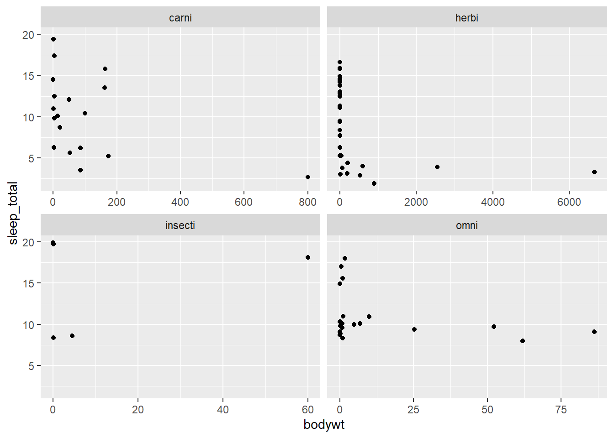

library(tidyverse)
data("msleep", package = "ggplot2")
# We drop NAs in vore to keep the facets clean
msleep |>
drop_na(vore) |>
ggplot(aes(x = bodywt, y = sleep_total)) +
geom_point() +
facet_wrap(facets = vars(vore), scales = "free_x")